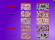

Citations - Cell Division
 |
Human Karyotype Cropped Courtesy of Wendy L. Golden, Ph.D., Professor Emeritus, University of Virginia School of Medicine, Department of Pathology. |
 |
Mitotic Photomicrographs Matthew Daniels. Attribution 4.0 International (CC BY 4.0). Source: Wellcome Collection. |
|  |
Mitotic Photomicrographs Cropped Unknown |
 |
Meiosis Photomicrographs Cropped, Blackfield Snustad,D.P. and M.J. Simmons (2000). Principles of Genetics, 2nd E., John Wiley & Sons, NY, NY Permission Pending |